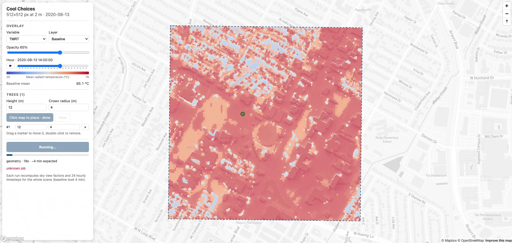

Week 5 · Sep 22 – Sep 28
SOLWEIG-light and the project skeleton
Four weeks of setup are done: the model runs, JavaScript makes pages move, React draws a map. This week the real project starts, and it starts in parallel. Split into tracks, build one piece each, and put them together.
A personal note first. I built a light version of SOLWEIG! (It took a while. Sorry about that.) It runs the same model on an ordinary CPU, with no PyTorch and no GPU, and it is what lets our website run the model on a small server. (FYI, GPU Server for publishing Websites is really expensive. Sadly, We cannot afford it.) This week, one of you gets to check my work.
Week 5 Tasks
- Track A — Run SOLWEIG-light on the Week 2 subset and compare it with SOLWEIG-GPU: runtime and results
- Track B — Create the project folder structure and a first FastAPI backend (add / multiply) that React buttons call
- Track C — Rebuild the frontend so it looks and behaves like the Cool Choices prototype: click to place, drag, delete, hour slider, overlay
- Track D — Everyone, together: decide which interventions and features the site will offer, and write them down
01 Where we are heading
Here is the finish line for the first half of the semester.
A passing demo looks like this. The map shows the baseline heat result as a translucent layer. Someone places a few things on it. They press Run analysis, the request travels to your backend. You don't have to make the website actually run the backend model yet (But if you can, that would be great!).
This is the prototype I built to see whether the whole idea works. I confirmed that we can actually build live-analysis website. But I will not share the full code of this (but will share some parts of it). You will work on building your own version, but please refer to this image!

02 Split the work
Step 0 · Together, before you split
Tracks B and C both work inside the project folder, so make the folder first, together, and push it. Work in the shared course repository, inside our folder:
no-heat-vip/2026_Fall/Cool_Choices/
└── cool-choices/ ← the team project (one folder, shared by everyone)
├── backend/
│ ├── app/
│ │ └── __init__.py ← empty file; Track B fills the rest
│ └── requirements.txt ← empty for now
├── frontend/ ← a fresh Vite project, made below
└── docs/
└── features.md ← empty for now; Track D fills itThe frontend is created the same way as in Week 4, with Vite, but fresh, so the team starts from one clean project instead of one person's homework. From inside cool-choices/:
npm create vite@latest frontend -- --template react
cd frontend
npm install
npm install react-map-gl mapbox-glVite writes the whole project for you: package.json, index.html, vite.config.js, src/main.jsx, src/App.jsx, src/index.css and a .gitignore that already excludes node_modules. Two things it does not do, and you must, before the first commit:
- Add a line
.envto the end offrontend/.gitignore, then createfrontend/.envwith one line,VITE_MAPBOX_TOKEN=pk.your_token, exactly as in Week 4. Each person can use their own token; the file never leaves their computer. - Run
git statusand check that neither.envnornode_modulesis listed. This repository is shared; a token committed here is a token everyone has.
Start it once with npm run dev to see the Vite welcome page, then stop it. Create the empty backend/app/__init__.py, backend/requirements.txt and docs/features.md, commit, push. Then everyone else pulls, runs npm install inside frontend/ on their own machine, and the tracks start.
The four tracks
Each one has its own section below with everything you need, including the code. Pick by interest, but make sure every track has an owner, and adjust the sizes to however many of you there are. Once Step 0 is pushed, the tracks are independent: A needs nothing from the others, B and C need only the skeleton, and C picks up A's overlay folder whenever it is ready.
| Track | You build | You hand over | People |
|---|---|---|---|
| A · Model | SOLWEIG-light installed and run on the Week 2 subset; timed against your Week 2 run of the original package; outputs compared | A filled-in timing table, comparison_14h.png, a short note; the overlays/ folder for Track C |
1 (2 if you can time it on two different laptops) |
| B · Backend | A FastAPI server with /api/calc; React buttons that call it through the Vite proxy |
Screenshots of /docs and the Results panel working |
1 |
| C · Frontend | The panel-over-map layout; click to place, drag to move, delete; hour and opacity sliders; the overlay from Track A | Screenshots with placed markers and the 14:00 overlay | 1–2 |
| D · Features | One meeting with everyone: which interventions, which features, what is out of scope | docs/features.md in the repository |
everyone |
03 Track A · SOLWEIG-light against SOLWEIG-GPU
SOLWEIG-GPU needs PyTorch, and on a laptop without an NVIDIA card it runs PyTorch on the CPU. SOLWEIG-light is the same model rewritten with NumPy and Numba, so it needs neither PyTorch nor a GPU. Same inputs, same outputs, a much lighter install. Your job is to check that claim on your own machine: does it produce the same numbers as your Week 2 run, and how long does it take?
SOLWEIG-light will get one more update next week, and it will be faster. (My repository will be updated next week!)
1 · Get the code
Clone github.com/Synn-Arch/SolweigLight. Put it somewhere you can find, for example Documents/SolweigLight, not inside the course repository.
2 · A second environment
SOLWEIG-light needs Python 3.11, GDAL 3.13 and NumPy 2.4. Your Week 2 environment has Python 3.10 and PyTorch, so it gets its own environment. Two environments, one per package; never install both into one.
conda create -n solweig-light -c conda-forge python=3.11 "gdal>=3.13,<3.14" "numpy=2.4" "scipy=1.17" "numba=0.67" pytz timezonefinder matplotlib
conda activate solweig-light
cd Documents/SolweigLight
pip install .If conda cannot find one of those versions, drop the numpy, scipy and numba pins from the first line and let pip install . fetch them; it knows the exact versions the package wants. The gdal pin is the one that matters, because pip cannot build GDAL for you.
Then the three checks, in that order:
python -c "import solweig_light; print(solweig_light.__version__)"
python -c "from osgeo import gdal, gdal_array; print('gdal', gdal.__version__)"
python -c "import numba; print('numba', numba.__version__)"The first prints a version. The second must print gdal 3.13.x without complaining about _gdal_array. The third proves the compiler that makes the light version fast is present.
3 · The reference: your Week 2 run
The original package is your side of the comparison, and you already know how to run it: it is Week 2, section 10, and your Input_subset/output_folder/0_0/TMRT_0_0.tif is probably still there. Run run_test.py once more in the solweig environment, on the same subset, and time it however you like; a phone stopwatch from pressing Enter to the prompt coming back is fine. Write the number down. No new code for this part.
4 · A second copy of the subset
SOLWEIG-light writes its working files (processed_inputs/, output_folder/) inside the folder you hand it, exactly like the original does. Point it at Week 2's Input_subset and it would overwrite the reference you just made. So it gets a copy of the inputs, cut from the same window.
week05-model/ ← or simply your Week 2 folder
├── Input_rasters/ ← the full Austin rasters from Week 2
├── ownmet_Forcing_data.txt
├── Input_subset/ ← Week 2: rasters + the original package's outputs
├── Input_subset_light/ ← same window, only the inputs, for SOLWEIG-light
├── make_subset.py
├── run_light.py
├── compare_outputs.py
└── render_overlay.pyThis is Week 2's make_subset.py rewritten with GDAL (which the new environment has) instead of rasterio (which it does not). It also copies Landcover.tif if it exists and the meteorological file. Use the same offsets you used in Week 2, or copying the three .tif files out of Input_subset by hand does the same thing.
"""Cut a small square out of the Austin sample so one run takes minutes, not hours.
python make_subset.py # defaults below
python make_subset.py --xoff 1700 --yoff 1400 --size 500 --out Input_subset
Use the offsets you found with find_dense.py in Week 2. The same window is applied
to every raster, so the outputs stay perfectly aligned.
"""
import argparse
import shutil
from pathlib import Path
from osgeo import gdal
gdal.UseExceptions()
RASTERS = ["Building_DSM.tif", "DEM.tif", "Trees.tif", "Landcover.tif"] # Landcover is optional
MET_FILE = "ownmet_Forcing_data.txt"
def main():
p = argparse.ArgumentParser()
p.add_argument("--src", default="Input_rasters", help="folder with the full Austin rasters")
p.add_argument("--out", default="Input_subset", help="folder to write the cut rasters into")
p.add_argument("--xoff", type=int, default=1700, help="left pixel of the window (from find_dense.py)")
p.add_argument("--yoff", type=int, default=1400, help="top pixel of the window")
p.add_argument("--size", type=int, default=500, help="window size in pixels (500 px x 2 m = 1 km)")
a = p.parse_args()
src, out = Path(a.src), Path(a.out)
out.mkdir(parents=True, exist_ok=True)
ref = gdal.Open(str(src / RASTERS[0]))
if a.xoff + a.size > ref.RasterXSize or a.yoff + a.size > ref.RasterYSize:
raise SystemExit(f"window runs past the edge ({ref.RasterXSize} x {ref.RasterYSize} px); "
"reduce --size or move --xoff/--yoff")
for name in RASTERS:
if not (src / name).exists():
print(f"[skip] {name} not found (that is fine for Landcover)")
continue
gdal.Translate(str(out / name), str(src / name), srcWin=[a.xoff, a.yoff, a.size, a.size])
ds = gdal.Open(str(out / name))
print(f"[ok] {name}: {ds.RasterXSize} x {ds.RasterYSize} px")
# the met file may sit next to the rasters or next to this script
for candidate in (src / MET_FILE, Path(MET_FILE)):
if candidate.exists():
shutil.copy2(candidate, out / MET_FILE)
print(f"[ok] copied {MET_FILE}")
break
else:
print(f"[!] {MET_FILE} not found; copy it into {out} yourself")
if __name__ == "__main__":
main()conda activate solweig-light
python make_subset.py --xoff 1700 --yoff 1400 --size 500 --out Input_subset_lightEvery raster should report 500 x 500 px, the same size as your Week 2 subset.
5 · Run SOLWEIG-light, with a stopwatch
This is Week 2's run_test.py with two changes: the import comes from solweig_light, and there is a stopwatch around the call. Everything passed to thermal_comfort is identical, which is the whole point.
"""SOLWEIG-light, timed. Same arguments as Week 2's run_test.py, different import.
Run inside the new environment: conda activate solweig-light
Run it TWICE: the first run also compiles the numerical kernels (Numba), the second
run is the number to report.
"""
import os
import time
from solweig_light import RuntimeOptions, runtime_options, thermal_comfort
SCENE = os.path.abspath("Input_subset_light") # a COPY of the inputs; never Week 2's Input_subset itself
MET = os.path.abspath("ownmet_Forcing_data.txt")
THREADS = min(4, os.cpu_count() or 1) # SOLWEIG-light runs single-threaded unless you ask
def main():
t0 = time.perf_counter()
options = RuntimeOptions(cpu_budget=THREADS, threads_per_worker=THREADS, block_pixels=1024)
with runtime_options(options):
thermal_comfort(
base_path=SCENE,
selected_date_str="2020-08-13",
building_dsm_filename="Building_DSM.tif",
dem_filename="DEM.tif",
trees_filename="Trees.tif",
landcover_filename=None,
tile_size=600,
overlap=20,
use_own_met=True,
own_met_file=MET,
save_tmrt=True,
save_svf=True,
save_shadow=True,
)
print(f"[DONE] SOLWEIG-light: {time.perf_counter() - t0:.1f} s using {THREADS} threads")
if __name__ == "__main__":
main()The one real addition is RuntimeOptions. SOLWEIG-light runs on a single core unless you tell it otherwise; the script asks for up to four threads, capped at what your laptop has.
conda activate solweig-light
python run_light.py
python run_light.pyThe first run also compiles its numerical kernels (that is what Numba does), which can add a minute or more. The compiled code is cached, so the second run is the honest number. Report both.
What a healthy light run looks like
Creating tiles for Building_DSM...
Created single tile: .../processed_inputs/Building_DSM/Building_DSM_0_0.tif
...
Copied to .../processed_inputs/metfiles/metfile_0_0.txt
Wind coefficient not used; skipping WindCoeff tiles.
[INFO] Found 1 matching SVF tiles.
[INFO] Writing outputs to: .../Input_subset_light/processed_inputs/SVF
[INFO] Standalone SVF calculation complete.
Running Solweig ...
[DONE] SOLWEIG-light: 187.4 s using 4 threadsThe number on the last line is yours to find out; on the machines I tried, a 500 × 500 subset takes a few minutes. Outputs land in Input_subset_light/output_folder/0_0/ as TMRT_0_0.tif, UTCI_0_0.tif and Shadow_0_0.tif, the same names the GPU package uses. One difference to know about: the light version keeps sky view factor in processed_inputs/SVF/SkyViewFactor_0_0.tif rather than writing a second copy into the output folder.
6 · Compare the numbers
Two GeoTIFFs with 24 bands each, one per hour: Week 2's in Input_subset, today's in Input_subset_light. The script subtracts them band by band, skips building pixels (which are empty in both), and prints one row per hour. It then draws 14:00 side by side, with the difference in the third panel.
"""Compare the two runs pixel by pixel, hour by hour, and draw one hour side by side.
python compare_outputs.py # writes comparison_14h.png next to this file
"""
import numpy as np
from osgeo import gdal
gdal.UseExceptions()
GPU = "Input_subset/output_folder/0_0/TMRT_0_0.tif" # SOLWEIG-GPU, your Week 2 run
LIGHT = "Input_subset_light/output_folder/0_0/TMRT_0_0.tif" # SOLWEIG-light
HOUR = 14 # band 15 = 14:00, the met file starts at midnight
def read(path):
"""Return (bands, rows, cols) float32 with nodata as NaN, plus each band's timestamp."""
ds = gdal.Open(path)
data = ds.ReadAsArray().astype("float32")
nodata = ds.GetRasterBand(1).GetNoDataValue()
if nodata is not None:
data[data == nodata] = np.nan
times = [ds.GetRasterBand(i + 1).GetMetadataItem("Time") or f"band {i + 1}" for i in range(ds.RasterCount)]
return data, times
gpu, hours = read(GPU)
light, _ = read(LIGHT)
if gpu.shape != light.shape:
raise SystemExit(f"shapes differ: {gpu.shape} vs {light.shape} - did you cut the same window?")
print(f"{'hour':>19} {'GPU mean':>9} {'light mean':>11} {'max |diff|':>11} {'pixels >0.5C':>13}")
for h in range(gpu.shape[0]):
both = np.isfinite(gpu[h]) & np.isfinite(light[h]) # buildings are NaN in both; skip them
diff = light[h][both] - gpu[h][both]
print(f"{hours[h]:>19} {np.nanmean(gpu[h]):9.2f} {np.nanmean(light[h]):11.2f} "
f"{np.abs(diff).max():11.3f} {int((np.abs(diff) > 0.5).sum()):13d}")
only_one = np.isfinite(gpu[HOUR]) != np.isfinite(light[HOUR])
print(f"\npixels valid in one run but not the other at {hours[HOUR]}: {int(only_one.sum())}")
# --- picture: GPU, light, and the difference at one hour -------------------
import matplotlib
matplotlib.use("Agg")
import matplotlib.pyplot as plt
fig, axes = plt.subplots(1, 3, figsize=(13, 4.2))
panels = [(gpu[HOUR], "SOLWEIG-GPU", "inferno", 20, 75),
(light[HOUR], "SOLWEIG-light", "inferno", 20, 75),
(light[HOUR] - gpu[HOUR], "light - GPU", "coolwarm", -2, 2)]
for ax, (img, title, cmap, lo, hi) in zip(axes, panels):
im = ax.imshow(img, cmap=cmap, vmin=lo, vmax=hi)
ax.set_title(f"{title} - {hours[HOUR]}")
ax.axis("off")
fig.colorbar(im, ax=ax, shrink=0.8)
fig.tight_layout()
fig.savefig("comparison_14h.png", dpi=120)
print("wrote comparison_14h.png")python compare_outputs.pyWhat you are looking for: the two mean columns should agree to a decimal place or two, and max |diff| should be small, a fraction of a degree. If it is tens of degrees at every hour, the two folders do not hold the same window, or one run used a different meteorological file. If it is large at only one or two hours, look at the picture; the difference panel will show you where.
Fill this in and put it in your hand-in:
| Machine (chip, RAM) | Original package (Week 2 script) | SOLWEIG-light, 1st run | SOLWEIG-light, 2nd run | max |diff| at 14:00 |
|---|---|---|---|---|
Then add a few lines of your own impressions: whatever you noticed, found odd, or would want to ask about. There is no right answer here; I want to know what it was like to use.
7 · Hand-off to Track C: the overlay
Track C needs something to draw on the map. This script turns the 24 hourly TMRT bands into 24 PNG images and writes scene.json with the four corner coordinates in longitude/latitude, which is how Mapbox positions an image. Buildings become transparent, and every hour uses the same colour range so the slider is comparable from frame to frame. The Cool Choices backend does exactly this, with the same code.
"""Turn the 24 hourly TMRT bands into PNGs the web map can draw, plus scene.json with the corners.
python render_overlay.py
Hand the resulting folder to Track C: it goes into frontend/public/overlays/
"""
import json
from pathlib import Path
import numpy as np
import matplotlib
matplotlib.use("Agg")
import matplotlib.pyplot as plt
from osgeo import gdal, osr
gdal.UseExceptions()
osr.UseExceptions()
TIF = "Input_subset_light/output_folder/0_0/TMRT_0_0.tif"
OUT = Path("overlays") # copy this folder to frontend/public/overlays
VMIN, VMAX = 20.0, 75.0 # one fixed colour range, so every hour is comparable
CMAP = plt.get_cmap("RdYlBu_r")
ds = gdal.Open(TIF)
rows, cols = ds.RasterYSize, ds.RasterXSize
gt = ds.GetGeoTransform() # pixel -> map coordinates (UTM metres)
# map coordinates -> longitude/latitude, which is what Mapbox wants
utm = osr.SpatialReference()
utm.ImportFromWkt(ds.GetProjection())
wgs84 = osr.SpatialReference()
wgs84.ImportFromEPSG(4326)
for srs in (utm, wgs84):
srs.SetAxisMappingStrategy(osr.OAMS_TRADITIONAL_GIS_ORDER) # always x=lon, y=lat
to_lonlat = osr.CoordinateTransformation(utm, wgs84)
def corner(col, row):
x = gt[0] + col * gt[1] + row * gt[2]
y = gt[3] + col * gt[4] + row * gt[5]
lon, lat, _ = to_lonlat.TransformPoint(x, y)
return [lon, lat]
# Mapbox image sources want: top-left, top-right, bottom-right, bottom-left
corners = [corner(0, 0), corner(cols, 0), corner(cols, rows), corner(0, rows)]
OUT.mkdir(parents=True, exist_ok=True)
hours = []
for i in range(ds.RasterCount):
band = ds.GetRasterBand(i + 1)
data = band.ReadAsArray().astype("float32")
nodata = band.GetNoDataValue()
if nodata is not None:
data[data == nodata] = np.nan
t = np.clip((data - VMIN) / (VMAX - VMIN), 0, 1)
rgba = CMAP(np.nan_to_num(t))
rgba[..., 3] = np.where(np.isfinite(data), 1.0, 0.0) # building pixels become transparent
plt.imsave(OUT / f"tmrt_{i:02d}.png", rgba)
hours.append(band.GetMetadataItem("Time") or f"{i:02d}:00")
scene = {
"variable": "tmrt",
"label": "Mean radiant temperature (°C)",
"vmin": VMIN,
"vmax": VMAX,
"corners": corners,
"center": [sum(c[0] for c in corners) / 4, sum(c[1] for c in corners) / 4],
"hours": hours,
}
(OUT / "scene.json").write_text(json.dumps(scene, indent=1))
print(f"wrote {ds.RasterCount} PNGs and scene.json to {OUT.resolve()}")python render_overlay.pyCopy the resulting overlays/ folder to Track C, who puts it in cool-choices/frontend/public/overlays/. Open one of the PNGs first: if it is entirely one colour, the range is wrong for your subset; if the whole image is transparent, the nodata handling caught everything.
04 Track B · Project skeleton and a first backend
You are building the first server. It does arithmetic. That sounds trivial, and it is; the point is that a button in the browser causes Python to run on a server and the answer comes back, with a real wait in between. Once that works, replacing arithmetic with SOLWEIG is a change inside one file.
1 · The folder structure
Step 0 made the skeleton; this is what it grows into this week. It mirrors the prototype's layout, so when you read the prototype's code later, everything is where you expect.
cool-choices/
├── backend/
│ ├── app/
│ │ ├── __init__.py ← empty file; makes app/ importable
│ │ ├── main.py ← FastAPI routes: what URLs exist
│ │ └── calc.py ← plain Python: the "model" (for now, + and ×)
│ └── requirements.txt
├── frontend/ ← your Week 4 Vite project, moved here
│ ├── public/
│ │ └── overlays/ ← Track A's PNGs land here
│ ├── src/
│ │ ├── App.jsx
│ │ ├── api.js ← every fetch() in the app, in one place
│ │ ├── config.js
│ │ ├── index.css
│ │ └── components/
│ ├── vite.config.js ← forwards /api to the backend
│ └── .env ← your Mapbox token (git-ignored)
└── docs/
└── features.md ← Track DPull first, so you have the skeleton from Step 0. Everything you add this week goes into backend/, plus the three frontend files named in section 02.
2 · The backend
Two Python files. Keep the arithmetic in its own file with no web code in it; that is the file Week 8 replaces with the model.
"""Plain Python. No web code in here on purpose.
This file is the stand-in for the model: in Week 8 it is replaced by a function
that paints trees into Trees.tif and runs SOLWEIG-light. Keeping the maths
separate from the API means you can test it without starting a server.
"""
def add(a: float, b: float) -> float:
return a + b
def multiply(a: float, b: float) -> float:
return a * b
# the API looks operations up by name, so adding one is one line here
OPERATIONS = {
"add": add,
"multiply": multiply,
}"""FastAPI service. Start it from the backend/ folder:
uvicorn app.main:app --reload --port 8000
Then open http://localhost:8000/docs - FastAPI writes the documentation and a
"Try it out" form for every route from the type hints below.
"""
import time
from typing import Literal
from fastapi import FastAPI
from pydantic import BaseModel
from .calc import OPERATIONS
app = FastAPI(title="Cool Choices API (demo)")
class CalcRequest(BaseModel):
"""What the browser must send. Anything else is rejected with a 422 before our code runs."""
a: float
b: float
op: Literal["add", "multiply"]
class CalcResponse(BaseModel):
op: str
a: float
b: float
result: float
seconds: float
@app.get("/api/health")
def health():
return {"ok": True}
@app.post("/api/calc", response_model=CalcResponse)
def calc(request: CalcRequest):
started = time.perf_counter()
time.sleep(1.0) # pretend this is a slow model; the browser must wait politely
function = OPERATIONS[request.op]
result = function(request.a, request.b)
return CalcResponse(op=request.op, a=request.a, b=request.b, result=result,
seconds=round(time.perf_counter() - started, 2))fastapi>=0.115,<1
uvicorn[standard]>=0.30,<1Install FastAPI into the solweig-light environment if Track A has made it, because that is where the backend will eventually run the model. Any Python 3.11 environment works for this week if they have not.
conda activate solweig-light
cd cool-choices/backend
pip install -r requirements.txt
uvicorn app.main:app --reload --port 8000Leave it running, like npm run dev. Then open localhost:8000/docs. FastAPI has written documentation for your two routes from the type hints, with a Try it out button on each. Send {"a": 3, "b": 4, "op": "multiply"} to /api/calc: after a one-second pause you get "result": 12. Now send "op": "divide". You get a 422 and a sentence explaining that op should be add or multiply. You wrote no validation code; the CalcRequest class is the contract, and FastAPI enforces it before your function runs.
Screenshot both responses. Three things in that file worth naming:
CalcRequestdescribes what the browser must send. Later it will hold a list of placements instead of two numbers, and the same 422 will protect you from a broken frontend.time.sleep(1.0)is there on purpose. The real model takes minutes; the browser has to cope with waiting, and Track B's frontend piece below shows how.OPERATIONS[request.op]looks a function up by name. Adding an operation is one line incalc.pyand one word in theLiteral.
3 · Wire the buttons
Three files on the frontend side, and they start in different states. vite.config.js already exists: Vite wrote it in Step 0, with nothing in it but plugins: [react()]. Replace its contents with the version below. src/api.js is new. src/components/ResultPanel.jsx is new too, and so is the components folder; create both.
The one addition to the Vite config is the server.proxy block. It forwards anything starting with /api to port 8000, so the browser only ever talks to one address and there is no cross-origin trouble. Restart npm run dev after editing it; Vite reads its config once.
import { defineConfig } from "vite";
import react from "@vitejs/plugin-react";
// Every request that starts with /api is forwarded to the FastAPI server.
// The browser only ever talks to :5173, so there is no cross-origin problem.
export default defineConfig({
plugins: [react()],
server: {
proxy: {
"/api": "http://localhost:8000",
},
},
});All fetch() calls live in one file. Components ask for api.calc(...) and never see a URL. When the backend changes in Week 6, this is the only frontend file that changes with it.
// Every fetch() in the app lives here. Components never build URLs themselves.
async function request(path, options) {
const response = await fetch(path, options);
if (!response.ok) {
let detail = response.statusText;
try {
const body = await response.json(); // FastAPI explains what was wrong
detail = typeof body.detail === "string" ? body.detail : JSON.stringify(body.detail);
} catch {
// not JSON, keep the status text
}
throw new Error(detail);
}
return response.json();
}
export const api = {
health: () => request("/api/health"),
calc: (a, b, op) =>
request("/api/calc", {
method: "POST",
headers: { "Content-Type": "application/json" },
body: JSON.stringify({ a, b, op }),
}),
// Track A writes this file; Track C reads it. No backend involved yet.
scene: () => request("/overlays/scene.json"),
};And the panel that uses it. It is Week 3's Load from server button grown up: mark the state as waiting, await the answer, show it. It keeps its own state on purpose, so Track C can drop it anywhere in the layout without wiring props.
import { useState } from "react";
import { api } from "../api";
// Track B's piece: two numbers go to the server, one answer comes back.
// It keeps its own state, so it works no matter where the panel puts it.
export default function ResultPanel() {
const [a, setA] = useState(3);
const [b, setB] = useState(4);
const [status, setStatus] = useState("idle"); // idle | waiting | done | error
const [answer, setAnswer] = useState(null);
const [error, setError] = useState(null);
async function run(op) {
setStatus("waiting");
setError(null);
try {
const data = await api.calc(Number(a), Number(b), op); // the browser waits here, politely
setAnswer(data);
setStatus("done");
} catch (e) {
setError(e.message);
setStatus("error");
}
}
return (
<section className="results">
<h2>Results</h2>
<div className="row">
<label>
a
<input type="number" value={a} onChange={(e) => setA(e.target.value)} />
</label>
<label>
b
<input type="number" value={b} onChange={(e) => setB(e.target.value)} />
</label>
</div>
<div className="row">
<button onClick={() => run("add")} disabled={status === "waiting"}>Add</button>
<button onClick={() => run("multiply")} disabled={status === "waiting"}>Multiply</button>
</div>
{status === "waiting" && <p className="muted small">Server: waiting…</p>}
{status === "done" && (
<p className="small">
{answer.a} {answer.op === "add" ? "+" : "×"} {answer.b} = <strong>{answer.result}</strong>
<span className="muted"> · {answer.seconds} s on the server</span>
</p>
)}
{status === "error" && <p className="error small">{error}</p>}
</section>
);
}To see it before Track C's layout is ready, open the App.jsx Vite generated, add import ResultPanel from "./components/ResultPanel"; at the top and <ResultPanel /> anywhere inside what it returns. Track C's App.jsx will overwrite that file later, and their panel already includes it, so nothing is lost.
Type 6 and 7, click Multiply. The panel says Server: waiting… for about a second, then 6 × 7 = 42 · 1 s on the server. Now stop the backend with Ctrl+C and click again: a red error line appears instead of a frozen page. That error path matters as much as the happy one.
05 Track C · The interface
Week 4 gave you a palette, a list and a map, each in its own box. This week they become one screen: the map fills the window, a panel floats over it, and the placements you make on the map are the same objects as the rows in the list. It is the prototype's layout, simplified to what you need right now.
What it has to do
- The map fills the window; the panel floats on the left.
- Choose a tool (tree, shelter). Press Add, then click the map: a marker appears where you clicked, and a row appears in the list. Press the button again to stop placing.
- Drag a marker: its coordinates in the list update.
- Press × on a row: the marker disappears.
- An hour slider and a play button; an opacity slider.
- If Track A's
overlays/folder is present, the hour's PNG is drawn over the map and the slider changes it. If not, everything else still works. - A Run analysis button that does nothing yet, and Track B's Results panel at the bottom.
Five files
Pull the Step 0 skeleton first; you work in its frontend/src, and you do not need anything else from Track B to start. App.jsx and index.css already exist from Vite: replace their contents. config.js and the components/ folder with Panel.jsx and MapArea.jsx are new. main.jsx stays exactly as Vite made it; check that it imports ./index.css. Vite's App.css is no longer used and can be deleted. If you want to reuse pieces of your Week 4 Sidebar.jsx, copy them into Panel.jsx rather than adding the file itself.
// Tool types the palette offers. Track D decides what else belongs here.
export const TYPES = ["tree", "shelter"];
export const COLORS = {
tree: "#2f8f4e",
shelter: "#8a6d3b",
};
// Where the map starts when there is no overlay yet (Georgia Tech campus).
export const CENTER = { lng: -84.3963, lat: 33.7756 };App owns every piece of state, as in Week 4, because the panel and the map both need all of it. Two new things here. The useEffect at the top loads scene.json once when the app starts; if the file is not there, it fails quietly and the map still works. The second useEffect is the play button: while playing is true it advances the hour every 0.7 seconds, and the function it returns stops the timer when playing turns off or the app closes. Forget that return and the timer runs forever.
import { useEffect, useState } from "react";
import MapArea from "./components/MapArea";
import Panel from "./components/Panel";
import { api } from "./api";
import { TYPES, CENTER } from "./config";
export default function App() {
// --- what the user is doing -------------------------------------------
const [selectedType, setSelectedType] = useState(TYPES[0]);
const [placing, setPlacing] = useState(false);
const [placements, setPlacements] = useState([]);
// --- what the map is showing -------------------------------------------
const [scene, setScene] = useState(null); // /overlays/scene.json, if Track A has produced it
const [ready, setReady] = useState(false); // don't draw the map until we know where to centre it
const [hour, setHour] = useState(14);
const [opacity, setOpacity] = useState(0.65);
const [playing, setPlaying] = useState(false);
// Load the overlay description once, when the app starts.
useEffect(() => {
api
.scene()
.then(setScene)
.catch(() => setScene(null)) // no overlays yet? the map still works
.finally(() => setReady(true));
}, []);
// Advance the hour every 0.7 s while "playing"; stop the timer when it turns off.
useEffect(() => {
if (!playing) return;
const timer = setInterval(() => setHour((h) => (h + 1) % 24), 700);
return () => clearInterval(timer);
}, [playing]);
function addPlacement(lng, lat) {
const next = { id: Date.now(), type: selectedType, lng, lat };
setPlacements([...placements, next]);
}
function movePlacement(id, lng, lat) {
setPlacements(placements.map((p) => (p.id === id ? { ...p, lng, lat } : p)));
}
function removePlacement(id) {
setPlacements(placements.filter((p) => p.id !== id));
}
// Which PNG the map should show right now. null until Track A's overlays exist.
const overlay = scene
? { url: `/overlays/tmrt_${String(hour).padStart(2, "0")}.png`, coordinates: scene.corners }
: null;
if (!ready) return <p className="loading">Loading…</p>;
return (
<div className="app">
<MapArea
center={scene ? { lng: scene.center[0], lat: scene.center[1] } : CENTER}
overlay={overlay}
opacity={opacity}
placements={placements}
placing={placing}
onPlace={addPlacement}
onMove={movePlacement}
/>
<Panel
scene={scene}
hour={hour}
onHour={setHour}
playing={playing}
onTogglePlay={() => setPlaying((p) => !p)}
opacity={opacity}
onOpacity={setOpacity}
types={TYPES}
selectedType={selectedType}
onSelect={setSelectedType}
placing={placing}
onTogglePlacing={() => setPlacing((p) => !p)}
placements={placements}
onRemove={removePlacement}
/>
</div>
);
}The panel is markup plus props. Nothing in it changes state directly; it calls the functions App handed down. Note the last line: Track B's Results panel simply sits at the bottom.
import ResultPanel from "./ResultPanel";
export default function Panel({
scene, hour, onHour, playing, onTogglePlay, opacity, onOpacity,
types, selectedType, onSelect, placing, onTogglePlacing, placements, onRemove,
}) {
const hourLabel = scene ? scene.hours[hour].replace("T", " ") : `${String(hour).padStart(2, "0")}:00`;
return (
<aside className="panel">
<header>
<h1>Cool Choices</h1>
<p className="muted">
{scene ? `${scene.hours.length} hourly layers loaded` : "no overlay yet - waiting for Track A"}
</p>
</header>
<section>
<h2>Overlay</h2>
<label>
Hour · {hourLabel}
<div className="row">
<button className="icon" onClick={onTogglePlay} title={playing ? "Pause" : "Play"}>
{playing ? "❚❚" : "▶"}
</button>
<input type="range" min={0} max={23} step={1} value={hour} onChange={(e) => onHour(Number(e.target.value))} />
</div>
</label>
<label>
Opacity {Math.round(opacity * 100)}%
<input type="range" min={0} max={1} step={0.05} value={opacity} onChange={(e) => onOpacity(Number(e.target.value))} />
</label>
{scene && (
<div className="legend">
<div className="legend-bar" />
<div className="legend-labels">
<span>{scene.vmin}</span>
<span>{scene.label}</span>
<span>{scene.vmax}</span>
</div>
</div>
)}
</section>
<section>
<h2>Tools</h2>
<div className="row">
{types.map((type) => (
<button
key={type}
className={type === selectedType ? "item selected" : "item"}
onClick={() => onSelect(type)}
>
{type}
</button>
))}
</div>
<button className={placing ? "wide primary" : "wide"} onClick={onTogglePlacing}>
{placing ? `Click the map to place a ${selectedType} · done` : `Add ${selectedType}`}
</button>
<h2>Placed ({placements.length})</h2>
{placements.length === 0 && <p className="muted small">Nothing placed yet.</p>}
<ul className="placed">
{placements.map((p, i) => (
<li key={p.id}>
<span>#{i + 1} {p.type}</span>
<span className="muted small">{p.lng.toFixed(5)}, {p.lat.toFixed(5)}</span>
<button onClick={() => onRemove(p.id)} title="Remove">×</button>
</li>
))}
</ul>
<p className="muted small">Drag a marker on the map to move it.</p>
</section>
<section>
<button className="wide primary" disabled title="Week 6: this sends your placements to the backend">
Run analysis
</button>
</section>
<ResultPanel />
</aside>
);
}The map has three new ideas. onClick on the map gives you event.lngLat, the coordinates under the cursor; in placing mode that becomes a placement, otherwise the click is ignored. A Marker with draggable fires onDragEnd with its new position, and you write that position back into the array, which is what makes the list update too. And the overlay is a Source of type image plus a raster Layer: an image pinned to four corners. Changing the hour only changes the image URL; Mapbox swaps the picture.
import "mapbox-gl/dist/mapbox-gl.css";
import Map, { Marker, Source, Layer } from "react-map-gl/mapbox";
import { COLORS } from "../config";
const TOKEN = import.meta.env.VITE_MAPBOX_TOKEN;
export default function MapArea({ center, overlay, opacity, placements, placing, onPlace, onMove }) {
return (
<main className="map-area">
<Map
mapboxAccessToken={TOKEN}
initialViewState={{ ...center, zoom: 15 }}
style={{ width: "100%", height: "100%" }}
mapStyle="mapbox://styles/mapbox/light-v11"
cursor={placing ? "crosshair" : "grab"}
onClick={(event) => {
if (!placing) return; // clicks only place things in placing mode
onPlace(event.lngLat.lng, event.lngLat.lat);
}}
>
{overlay && (
<Source id="overlay" type="image" url={overlay.url} coordinates={overlay.coordinates}>
<Layer
id="overlay-layer"
type="raster"
paint={{ "raster-opacity": opacity, "raster-fade-duration": 0 }}
/>
</Source>
)}
{placements.map((p) => (
<Marker
key={p.id}
longitude={p.lng}
latitude={p.lat}
color={COLORS[p.type]}
draggable
onDragEnd={(event) => onMove(p.id, event.lngLat.lng, event.lngLat.lat)}
/>
))}
</Map>
</main>
);
}The styles are given. The interesting lines are the first three rules: the map is position: absolute; inset: 0 and the panel floats above it.
/* React mounts inside #root, so it needs a height too */
html, body, #root { height: 100%; }
* { box-sizing: border-box; }
body {
margin: 0;
font-family: system-ui, sans-serif;
color: #14232b;
}
/* the map fills the window; the panel floats on top of it */
.app { position: relative; height: 100%; }
.map-area { position: absolute; inset: 0; }
.panel {
position: absolute;
top: 12px;
left: 12px;
bottom: 12px;
width: 340px;
overflow-y: auto;
padding: 14px 16px;
display: flex;
flex-direction: column;
gap: 14px;
background: rgba(255, 255, 255, 0.96);
border-radius: 10px;
box-shadow: 0 2px 12px rgba(0, 0, 0, 0.18);
}
.panel header h1 { font-size: 17px; margin: 0 0 2px; }
.panel section { border-top: 1px solid #d9d9d9; padding-top: 10px; }
h2 {
font-size: 13px;
text-transform: uppercase;
letter-spacing: .08em;
color: #5b6f77;
margin: 0 0 8px;
}
label { display: block; font-size: 13px; margin-bottom: 8px; }
label > input[type="number"] {
display: block;
width: 100%;
margin-top: 3px;
padding: 5px 6px;
font: inherit;
border: 1px solid #d9d9d9;
border-radius: 6px;
}
input[type="range"] { width: 100%; margin-top: 4px; }
.row { display: flex; gap: 8px; align-items: center; }
.row > label, .row > input[type="range"] { flex: 1; }
button {
font: inherit;
font-size: 13px;
padding: 7px 10px;
border-radius: 6px;
border: 1px solid #d9d9d9;
background: #fff;
cursor: pointer;
}
button:disabled { opacity: .5; cursor: not-allowed; }
button.wide { width: 100%; margin: 6px 0; padding: 10px; font-weight: 600; }
button.primary { background: #1f4e79; border-color: #1f4e79; color: #fff; }
button.icon { padding: 4px 9px; line-height: 1; }
button.item { flex: 1; }
button.item.selected { background: #0f8b8d; border-color: #0f8b8d; color: #fff; }
.muted { color: #5b6f77; margin: 0; }
.small { font-size: 12px; }
.error { color: #b00020; }
.loading { padding: 24px; color: #5b6f77; }
.legend-bar {
height: 10px;
border-radius: 3px;
background: linear-gradient(to right, #313695, #74add1, #ffffbf, #f46d43, #a50026);
}
.legend-labels { display: flex; justify-content: space-between; font-size: 11px; color: #5b6f77; margin-top: 3px; }
.placed { list-style: none; margin: 0; padding: 0; }
.placed li {
display: flex;
align-items: center;
justify-content: space-between;
gap: 8px;
padding: 6px 6px 6px 10px;
margin-bottom: 4px;
font-size: 13px;
background: #fff;
border: 1px solid #cbd8dc;
border-radius: 3px;
}
.placed li button { font-size: 16px; line-height: 1; color: #94a7ae; background: none; border: 0; padding: 0 4px; }
.placed li button:hover { color: #b4211f; }
.results { padding-top: 10px; }If Track B's ResultPanel.jsx has not arrived when you start, create this placeholder so the import resolves, and delete it when theirs lands:
export default function ResultPanel() {
return (
<section className="results">
<h2>Results</h2>
<p className="muted small">Track B plugs in here.</p>
</section>
);
}The overlay
Put Track A's folder at frontend/public/overlays/. Vite serves everything in public/ from the site root, so scene.json is at localhost:5173/overlays/scene.json; open that address in the browser to check the file is where the app expects it. No restart needed. The map recentres on Austin, the panel reports 24 hourly layers loaded, and the slider walks through the day. Drag it to the night hours and watch the whole scene cool.
Twenty-four hours of a 500 × 500 grid is six million numbers. Sending them to the browser and colouring each one there is possible, but slow to build and slow to load. Sending 24 small pictures that Python has already coloured is what the prototype does, and it is what your backend will produce in Week 8. The frontend never needs to know what a Tmrt is; it needs a URL and four corners.
Try it
- Placing mode off: clicking the map does nothing. On: the cursor is a crosshair and each click adds a row.
- Place a tree and a shelter; they have different colours.
- Drag a marker; the numbers in its row change.
- Press ▶; the hour advances; press again and it stops.
- Opacity to 0: the overlay vanishes, the markers stay.
06 Track D · Decide the features
This one is for the whole team, in one sitting, with the prototype screenshot on the table. Right now my prototype site can plant trees and run analysis. What else should it let someone do, and what should it show them? Discuss with your team.
Some of the questions to consider:
- Who is the user? A campus planner? A resident wondering about their street? A student in a class like this one? The answer decides how much explanation the screen needs.
- What decision does the site support? "Where would a tree help most" is a different site from "how much cooler does this plaza get with a canopy".
- Which interventions? For each one, what does the model need to know? A tree is a canopy height in
Trees.tif. A shade shelter is an opaque roof, which is a bump inBuilding_DSM.tif. - What does the user see afterwards? The difference map? The number of degrees at one point? A curve across the day? Before/after at a chosen hour?
- Which area? The prototype uses Austin. Which regions are you interested in?
Bring the discussion result to next week's session. Let's discuss together with Dr.Basu and me, and I (Sungho!) will help you to implement the features.
07 Put it together
After finishing the individual tracks:
- The Step 0
cool-choices/folder is the base; Track B'sbackend/and three frontend files are in it. - Track C's five files go into
frontend/src/. The only file both B and C might have touched isApp.jsx; C's version wins, because it includes B's panel. - Track A's
overlays/goes intofrontend/public/.
Then one of you runs the whole thing from a fresh pull, exactly as a stranger would:
conda activate solweig-light
cd cool-choices/backend
uvicorn app.main:app --reload --port 8000cd cool-choices/frontend
npm install
npm run devOpen localhost:5173. Overlay at 14:00, two markers placed, 6 × 7 = 42 in the Results panel. Screenshot that screen; it is your Week 5.
git add .
git commit -m "Week 5 Final Update"
git push